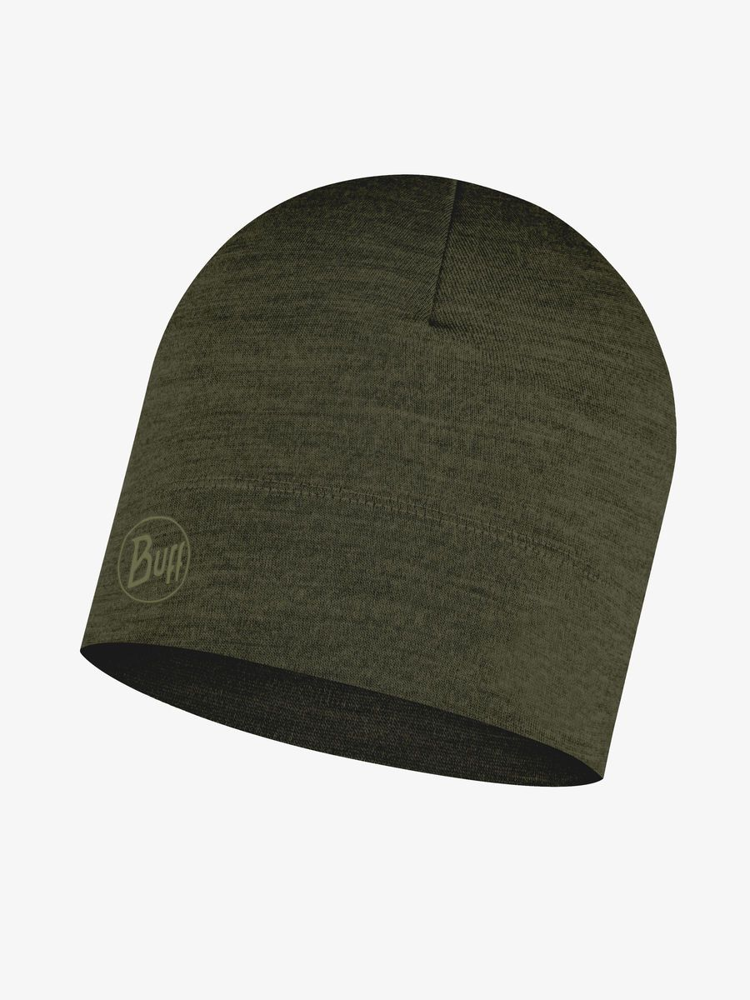
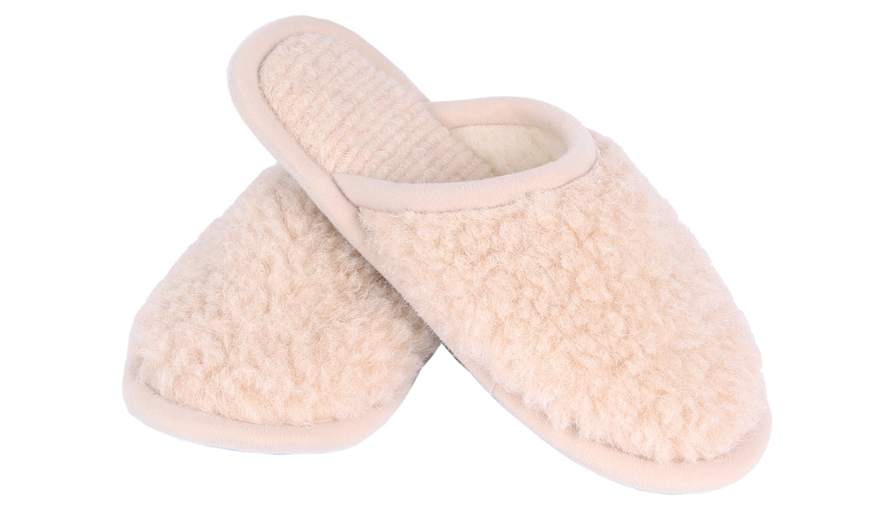
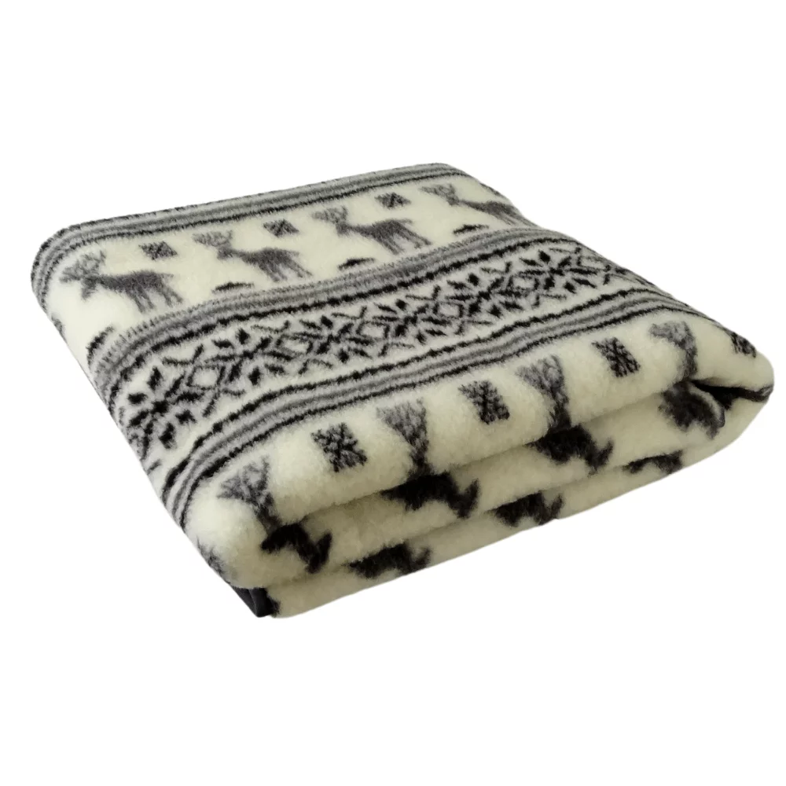
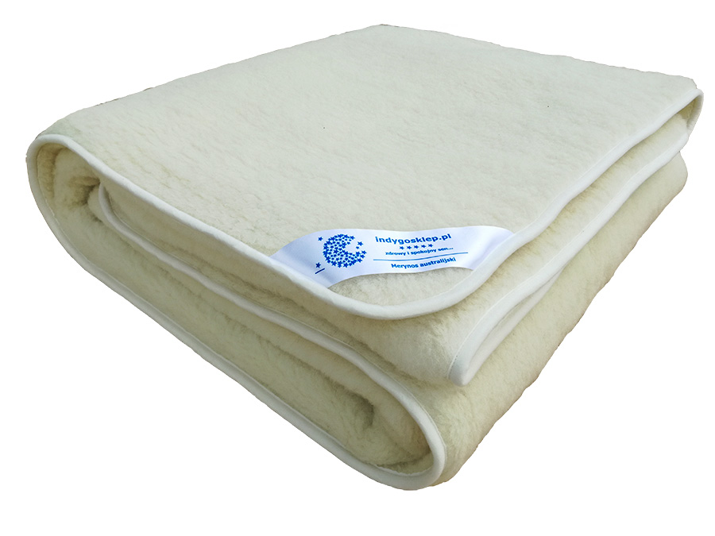
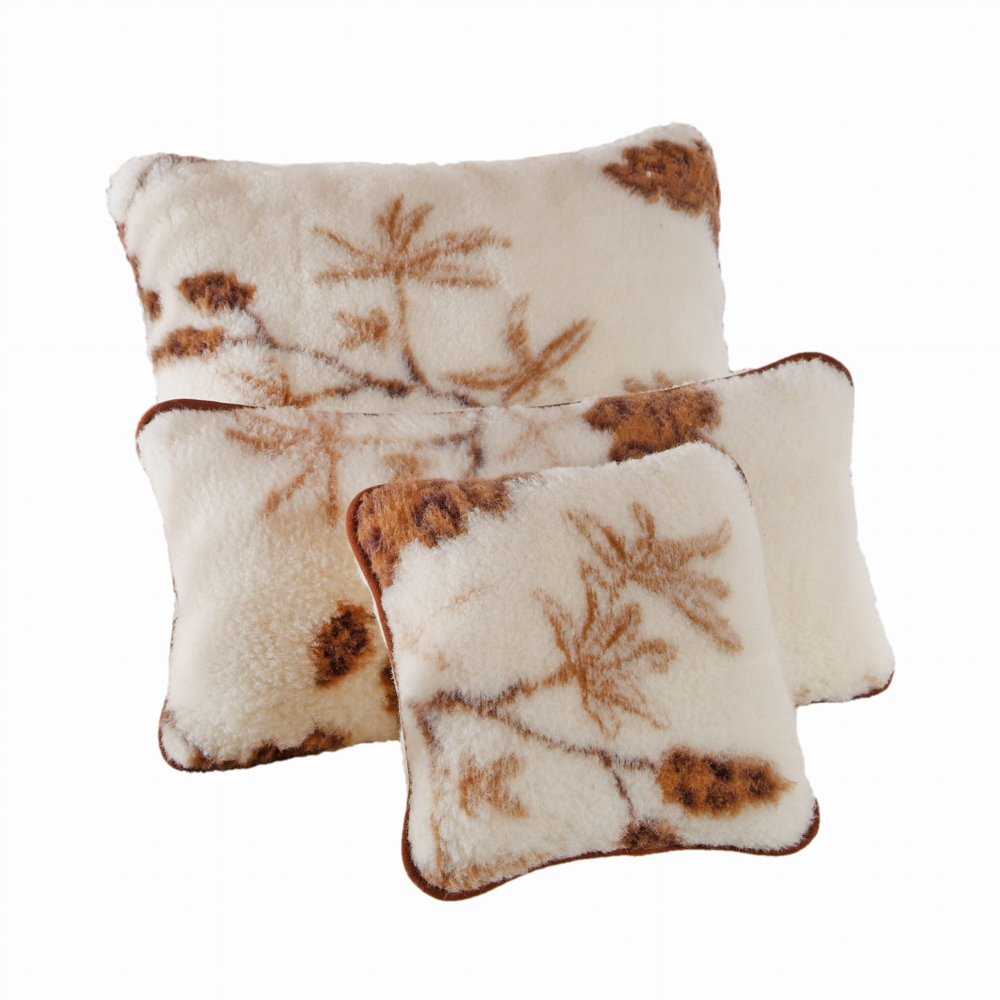
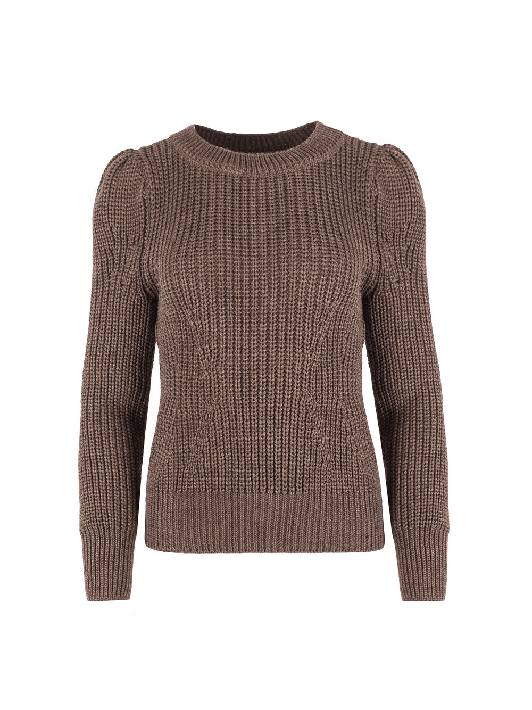
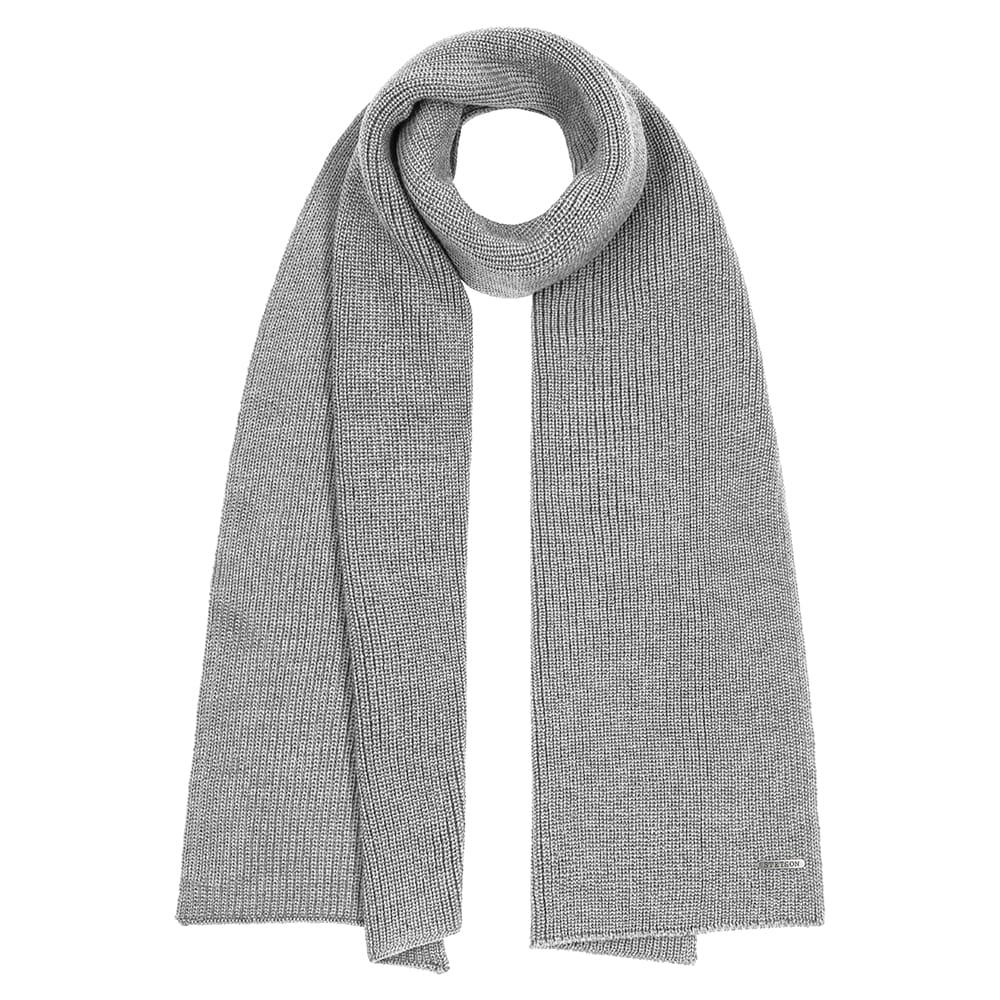
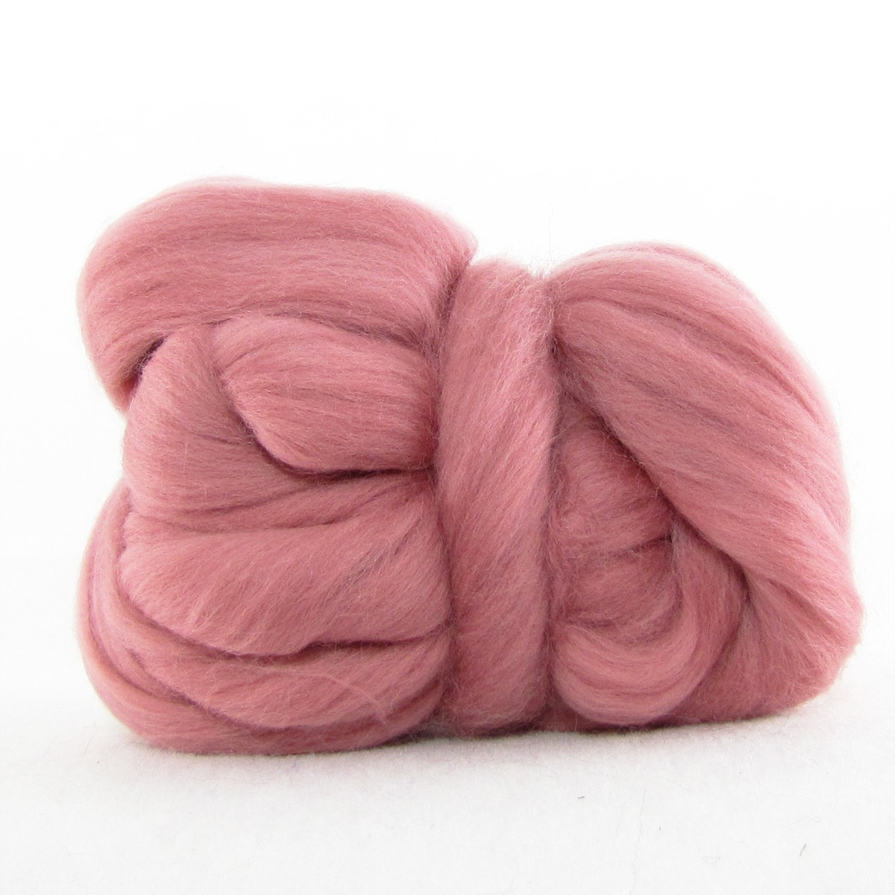

Merynosy to rodzaj owcy hodowlanej znanej ze szczególnie miękkiej i delikatnej wełny. Oto kilka kluczowych informacji na temat merynosów:
Pochodzenie:
Merynosy wywodzą się z dzikiej owcy (Mouflon), która była pierwotnie spotykana w rejonach Azji Zachodniej.
Dzisiaj merynosy są hodowane głównie w Australii, Nowej Zelandii, Południowej Afryce, i innych krajach o klimacie umiarkowanym.
Hodowla:
Merynosy są hodowane przede wszystkim ze względu na ich wełnę. Hodowcy dbają o to, aby wełna była jak najbardziej miękka i czysta.
Istnieją różne odmiany merynosów, takie jak Merynos australijski, Merynos nowozelandzki i inne.
Zdrowie merynosów:
Hodowla merynosów wymaga specjalnej opieki i nadzoru.
Ważne jest zapewnienie im odpowiednich warunków bytowych i zdrowotnych, aby zachować jakość ich wełny i dobrostan zwierząt.
Ekologia:
Produkcja wełny merynosa może być ekologiczna, jeśli odpowiednio zarządza się pastwiskami i troszczy się o środowisko naturalne.
Wzrasta również świadomość ekologiczna w przemyśle tekstylnym, co wpływa na rosnący popyt na wełnę merynosa produkowaną w zrównoważony sposób.
Merynosy są ważnym gatunkiem owcy w przemyśle włókienniczym ze względu na jakość i unikalne właściwości ich wełny.
Produkty z wełny merynosa cieszą się popularnością w modzie i innych dziedzinach związanych z tekstyliami, a ich hodowla stanowi istotny element gospodarki wielu krajów.
Wełna Merynosa
Najbardziej znana cecha merynosów to ich wyjątkowo miękka i cienka wełna.
Wełna merynosa jest ceniona na całym świecie za swoją jakość, która jest idealna do produkcji wysokiej jakości tkanin i ubrań.
Zalety wełny merynosów:
Lekkość – wełna merynosów odznacza się doskonałym stosunkiem ciepła do wagi.
Dobrej jakości włókna zapewniają ciepło bez względu na grubość swetra – sweter jest lekki w noszeniu, a mimo tego zapewnia maksymalne ciepło.
Pochłanianie wilgoci – wełna merino jest w stanie pochłonąć wilgoć w ilości stanowiącej do 35% jej masy.
Odciąga przy tym wilgoć na zewnątrz, dzięki czemu skóra ma uczucie suchości nawet w przypadku, gdy odzież jest wilgotna.
Termoregulacyjność – wełna merynosów charakteryzuje się minimalną przewodnością cieplną.
Im cieńsze włókno i gęstsze runo, tym lepsza izolacja termiczna.
Odporność na zapachy – wełna merino jest naturalnie odporna na pochłanianie zapachów z otoczenia.
Antystatyczność – wełna merynosów jest odporna na siły elektrostatyczne, co sprawia, że nie przyczepia się do innych materiałów.
Elastyczność – ubrania z wełny merino są bardzo elastyczne i zachowują swój kształt przez długie lata.
Nawet po rozciągnięciu wracają do swojej pierwotnej postaci.
Przewiewność – bez względu na grubość materiału, merino zapewnia dużą przewiewność.
Wszystko dzięki łuskom pokrywającym włókna wełny, które tworzą pory umożliwiające wymianę powietrza.
Łatwość w czyszczeniu – dzięki dużej zawartości naturalnych tłuszczów, wełna merino trudniej się brudzi oraz jest łatwiejsza w czyszczeniu.
Dodatkowo ubrania z tego materiału nie wymagają częstego prania, ponieważ wełna ulega samoczynnej regeneracji podczas kontaktu z tlenem.
Ognioodporność – w przeciwieństwie do innych włókien, wełna merynosów nie topi się pod wpływem wysokiej temperatury.
Jest najmniej łatwopalna i najbezpieczniejsza – jest samogasząca i w razie kontaktu z ogniem nie stopi się i nie przyklei do skóry.
Ochrona przed promieniowaniem UV – wełna merino posiada filtr UPF o minimalnej wysokości 50, który zapewnia całkowitą ochronę przeciwsłoneczną.
To o wiele więcej niż ochrona gwarantowana przez bawełnę lub materiały syntetyczne.
Wyroby z Wełny Merynosa
Dziś z wełny produkuje się przede wszystkim wysokiej jakości odzież oraz komplety eleganckiej pościeli.
Warto zaznaczyć, że nie są to drapiące swetry czy koce, jakie dostępne były kilkanaście lat temu.
Dzisiejsze wyroby wełniane są niezwykle delikatne, przyjemne w dotyku, nie ma mowy o żadnym niekomfortowym drapaniu.
Oczywiście wszystko zależy od jakości wykorzystanej wełny.
Produkty wykonane z najlepszych włókien wyróżniają się wspomnianymi już właściwościami termoregulacyjnymi i higroskopijnymi.
Włókna wełny mają zdolność regulowania temperatury, co oznacza, że zapobiegają przegrzewaniu się ciała i wyziębiania. Materiał ten jest zbudowany z falistych włókien, które wypełnione są pęcherzykami powietrza. Włókna pochłaniają ciepło w chłodniejsze dni, zapewniając odpowiednią temperaturę, a w okresie upałów przyjemnie chłodzą. Dodatkowym atutem są silne właściwości higroskopijne. Wełna pochłania wilgoć, w tym pot ludzki, i odprowadza ją na zewnątrz. Dzięki temu na powierzchni skóry nie rozwijają się bakterie i grzyby, które bardzo lubią wilgotne środowisko. Właśnie dlatego z wełny wytwarza się swetry, kamizelki, czapki, szaliki, cienkie topy letnie czy całe komplety pościeli.








Właściwości Zdrowotne Wełny
Z wełny coraz częściej produkuje się akcesoria do rehabilitacji.
Materiał ten ma bowiem działanie przeciwbólowe oraz stymulujące.
Wełna merynos niweluje szkodliwą dla ludzkiego organizmu jonizację dodatnią, zamieniając ją na ujemną.
Jest szczególnie polecana osobom borykającym się z uciążliwymi reumatycznymi bólami stawów.
Włókna wełny stymulują zakończenia nerwowe, dzięki czemu krew szybciej krąży.
Dlatego wełniana pościel bądź akcesoria rehabilitacyjne przydają się także ludziom, którzy mają problemy krążeniowe.